Note how Variance Scales with Mean
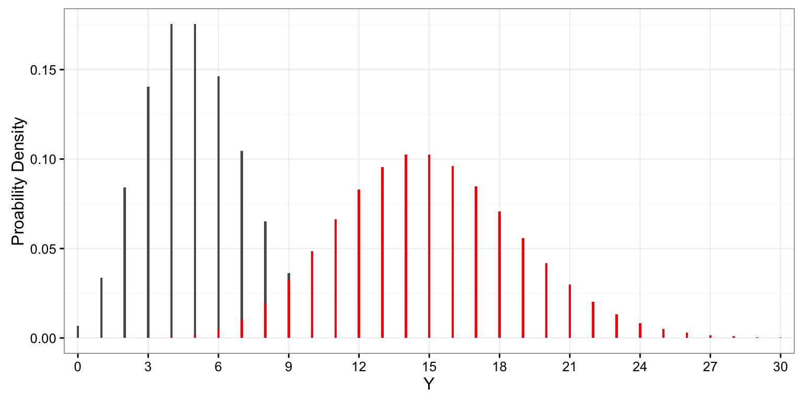
When Lambda is Large, Approximately Normal
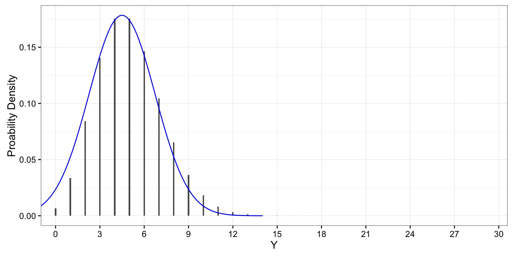
The Binomial Distribution
- Results from multiple “coin flips”
- e.g., # of Budworms eating a leaf!
- Defined by size (# of flips) and prob (probability of heads)
Increasing Probability Shifts Distribution
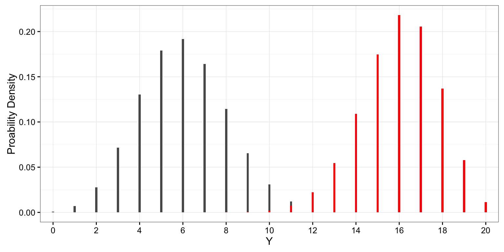
All of these distributions can be used as for Hypothesis Tests
Which distribution when?
| Normal |
Continuous variable with many small sources of variation |
| Log-Normal |
Continuous variable where sources of variation multiply |
| Gamma |
Positive continuous variable with long-tailed distribution |
|
|
| Poisson |
Count data, e.g. # of mutations |
| Binomial |
Outcome of multiple yes/no trials |
We don’t need no stinkin’ distribution!
- You can always simulate a reference distribution based on arbitrary rules
- Then ask what fraction of your observation, or more extreme observations, are in that reference distribution
Tapir Snouts
- 90% of tapirs have a snout that is 5-10 cm in length, with equal probability
- 10% of tapirs have a snouth that is 10-15 cm in length, with equal probability of any length
- We can simulate sampling thousands of tapirs to construct a distribution
Simulated Distribution
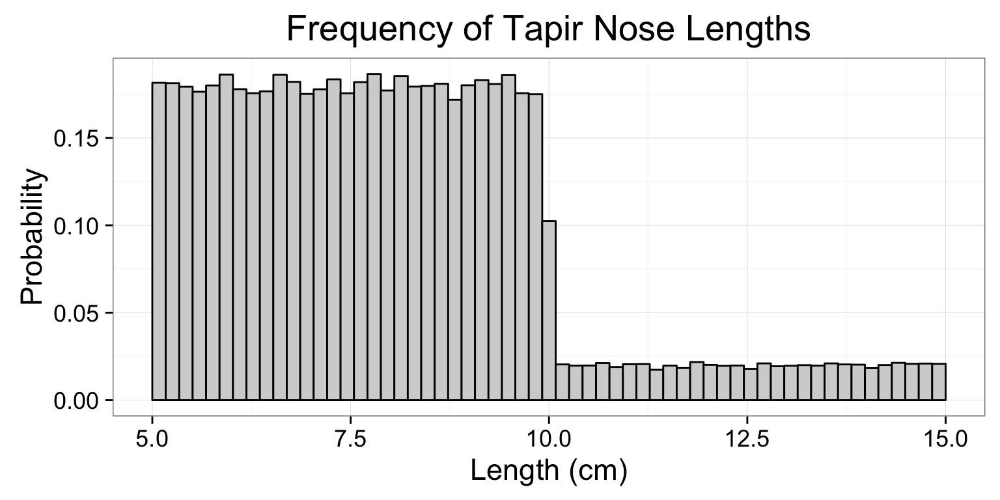
Testing a “Tapir”
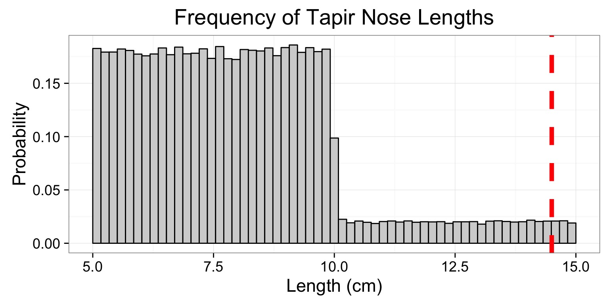
p = 0.01042
Today
- Null Hypothesis Tests & Other Distibrutions
- Test Statistics: Z-Tests
- Null Hypothesis Sigificance Testing
- Statistical Power in a NHST framework
- Power via Simulation
Evaluation of a Test Statistic
We use our data to calculate a test statistic that maps to a value of the null distribution.
We can then calculate the probability of observing our data, or of observing data even more extreme, given that the null hypothesis is true.
\(P(X \leq Data | H_{0})\)
Evaluation of a Test Statistic
Let’s say we know the distribution of chest hair lengths on Welsh Corgis 
A short-haired Corgi
You have a Corgi with a chest hair that is 5 cm 
A Corgi’s P
What is the probability of this or a shorter-haired Corgi? 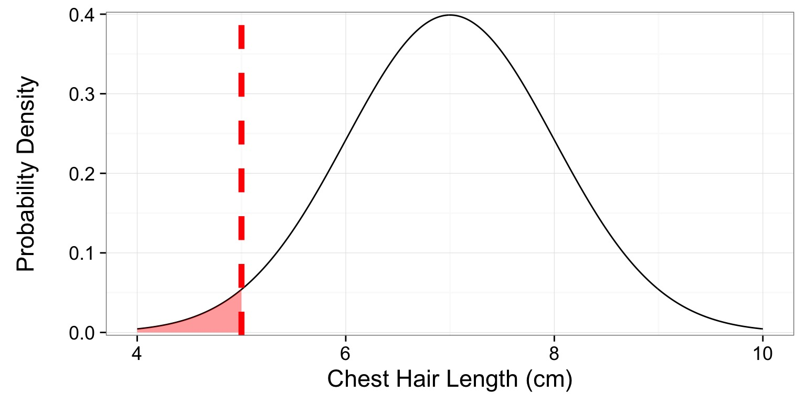
p = 0.0228
The Z-Test
- Let’s assume I have a BOX of 15 Corgis. I suspect fraud.
- I get the average chest hair length of each Corgi - but are they different?
- So, we’re interested in the difference between my sample mean and the population mean: \(\bar{Y} - \mu\)
\[\Large H_o: \bar{Y} - \mu = 0\]
When & How to use Z-Test
We want to calculate a test statistic (z) & compare it to the standard normal curve (\(\mu = 0, \sigma=1\))
1. I have a known population mean (\(\mu\)) and standard deviation (\(\sigma\))
2. I can calculate a population SE of any estimate of the mean, \(\frac{\sigma}{\sqrt{n}}\)
3. Now calculate a test statistic
\[\Large z = \frac{\bar{Y} - \mu}{\sigma_{\bar{Y}}}\]
Our Corgis and Z
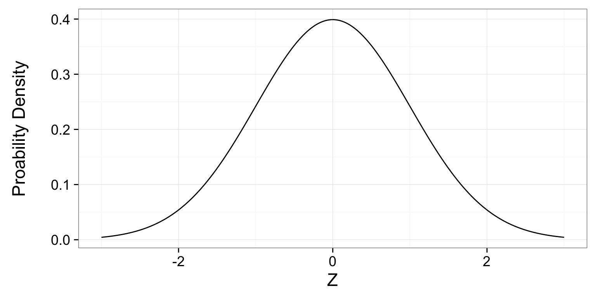
- Corgis: \(\mu = 7, \sigma=1\), N=15 so \(s_{\bar{Y}}=\) 0.258
- Sample, \(\bar{Y} = 10\), 10-7 = 3
- Z = 3/0.258 = 11.619
Our Corgis and Z
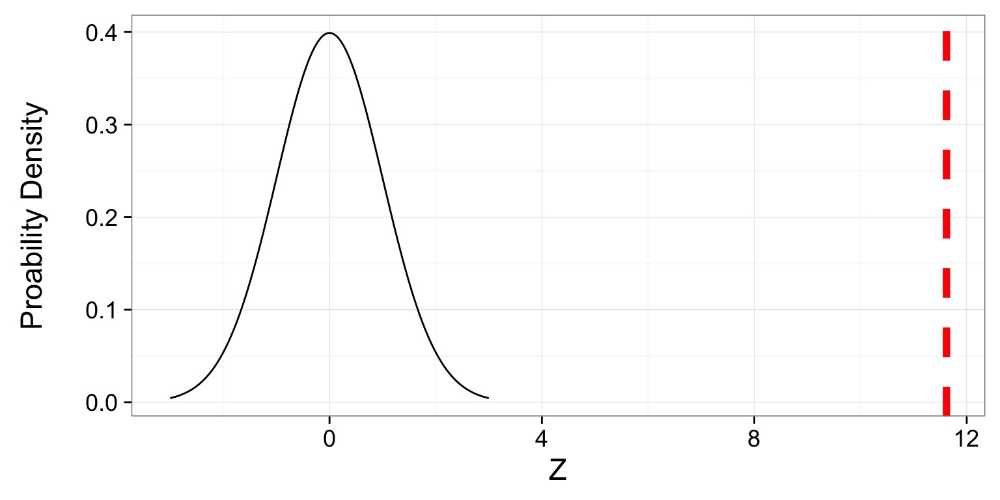
- Z = 3/0.258 = 11.619
- p = 3.299758910^{-31}
Today
- Null Hypothesis Tests & Other Distibrutions
- Test Statistics: Z-Tests
- Null Hypothesis Sigificance Testing
- Statistical Power in a NHST framework
- Power via Simulation
How do we Use P-Values
Confirmationist: You gather data and look for evidence in support of your research hypothesis. This could be done in various ways, but one standard approach is via statistical significance testing: the goal is to reject a null hypothesis, and then this rejection will supply evidence in favor of your preferred research hypothesis.
Falsificationist:You use your research hypothesis to make specific (probabilistic) predictions and then gather data and perform analyses with the goal of rejecting your hypothesis.
Neyman-Pearson Hypothesis Testing and Decision Making

Jerzy Neyman

Egon Pearson
Neyman-Pearson Hypothesis Testing
1. Establish a critical threshold below which one rejects a null hypothesis - \(\alpha\). A priori reasoning sets this threshold.
2. Neyman and Pearon state that if p \(\le\) \(\alpha\) then we reject the null.
3. Fisher pushed for a typical \(\alpha\) of 0.05 as indicating statistical significance, although eschewed the idea of a decision procedure where a null is abandoned.
Statistical Significance is NOT Biological Sigficance.
## Today
- Null Hypothesis Tests & Other Distibrutions
Test Statistics: Z-Tests
- Null Hypothesis Sigificance Testing
- Statistical Power in a NHST framework
- Power via Simulation
Types of Errors in a NHST framework
| Reject Ho |
Type I Error |
Correct OR Type S error |
| Fail to Reject Ho** |
– |
Type II Error |
- Possibility of Type I error regulated by choice of \(\alpha\)
Type S (Sign) Error
Correctly rejecting the null hypothesis for the wrong reason
This is a Type S, or Type III error - a mistake of sign. Often inherent in an experiment’s design, or possible by change.
Can determine by mechanistic simulation or a redesigned study.
Power of a Test
- If \(\beta\) is the probability of comitting a type II error, 1-\(\beta\) is the power of a test.
- The higher the power, the less of a chance of comitting a type II error.
- We typically want a power of 0.8 or higher. (20% chance of failing to reject a false null)
\(\alpha = 0.05\) & \(\beta = 0.20\)
5% Chance of Falsely Rejecting the Null, 20% Chance of Falsely Accepting the Null
Are you comfortable with this? Why or why not?
What is Power, Anyway?
Given that we often begin by setting our acceptable \(\alpha\), how do we then determine \(\beta\) given our sample design?
Formula for a specific test, using sample size, effect size, etc.
Simulate many samples, and see how often we get the wrong answer assuming a given \(\alpha\)!
Today
- Null Hypothesis Tests & Other Distibrutions
- Test Statistics: Z-Tests
- Null Hypothesis Sigificance Testing
- Statistical Power in a NHST framework
- Power via Simulation
Power via Simulation Is a Process
- Determine your null hypothesis and model that describes how the world really works
- Draw a simulated sample based on your model of the world and sampling choices (e.g., sample size, additional confounding factors, sample spatial arrangement, etc.)
- Calculate the p-value for your one simulated sample
- Repeat simulated p-value generation thousands of times
4. Determine the fraction of times you failed to reject the null based on your choice of \(\alpha\). This is \(\beta\)
- \(1-\beta\) is your power!
Example of Sample Size and Power via Simulation
We want to test the effects of a drug on heart rate. We know that the average heart rate of our patients is 80 beats per minute and the SD is 6 BPM.
How large must our sample size be, assuming that we have an \(\alpha\) of 0.05 and want our power to be at least 0.8?
First What is Ho? How would I turn this into a Z-test
Simulating the Real World
Second! Let’s say we assume that the drug actually speeds up heart rate by 13 beats per minute, on average. This is our effect size. We can generate simulated means from trials with different sample sizes (1-10) with 500 replicate draws for each sample size 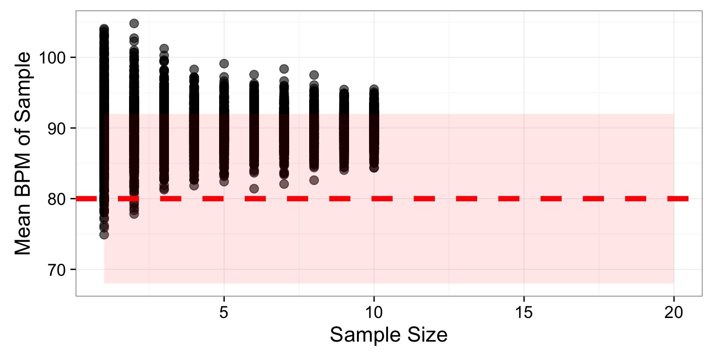
Obtain P-values from your Simulations
Third!Get the p value of each sim with a Z-test:
(Sample Mean - 80) / (6 / \(\sqrt{Sample Size}\))
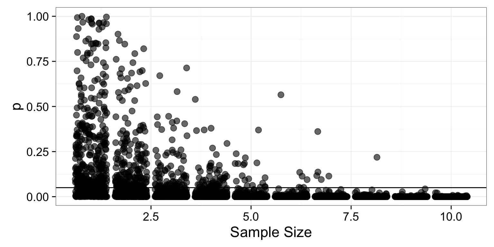
Turn Many P-Values into Power!
Third! Power is 1 - the fraction of those tests which p \(\le \alpha\). So, we group by each sample sizes to get…
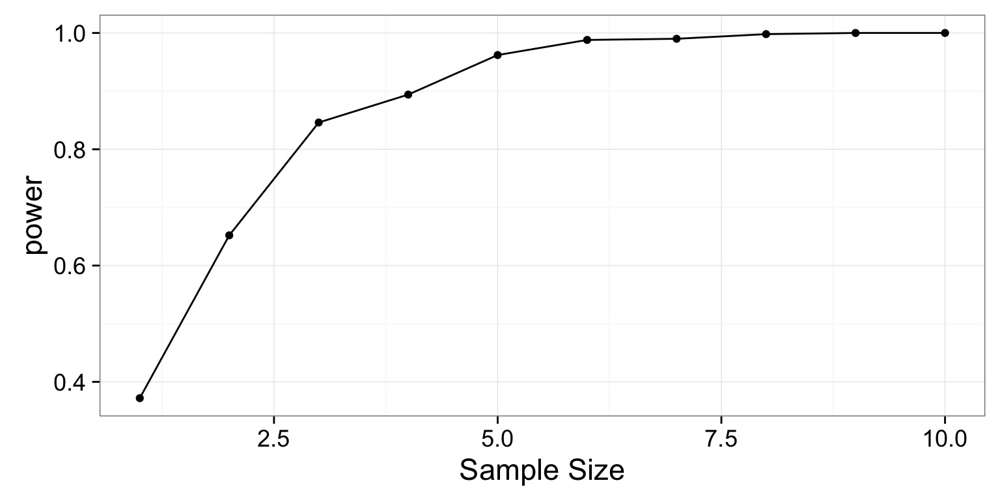
Tradeoff between \(\alpha\) and \(\beta\)
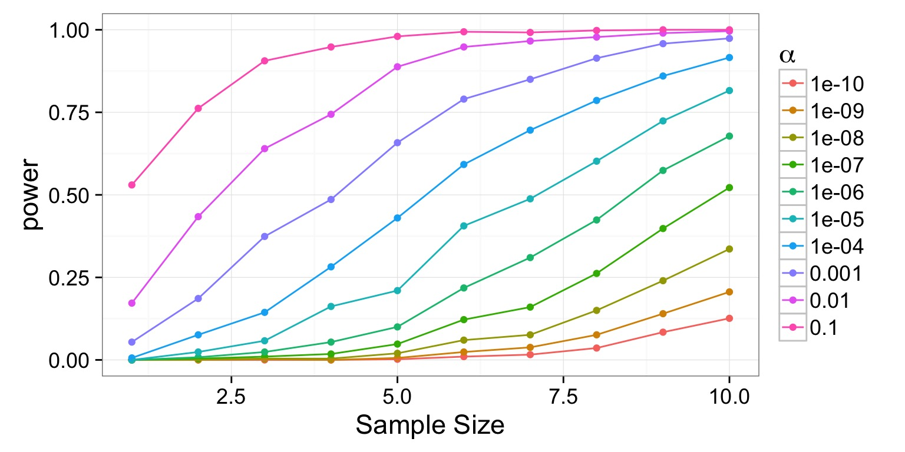
Tradeoff between \(\alpha\) and \(\beta\)
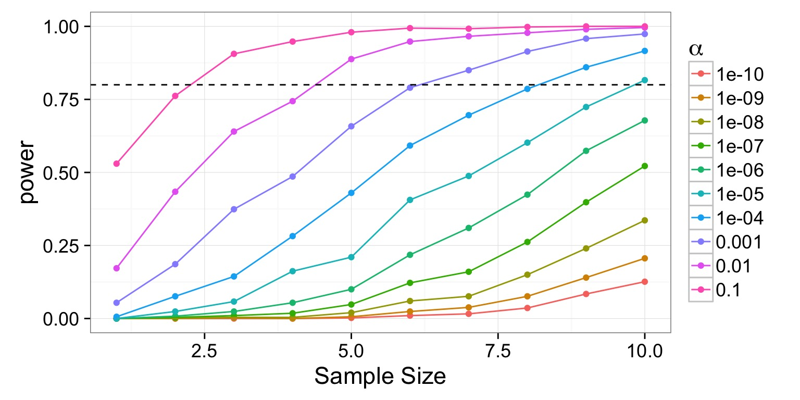
Tradeoff between \(\alpha\) and \(\beta\)
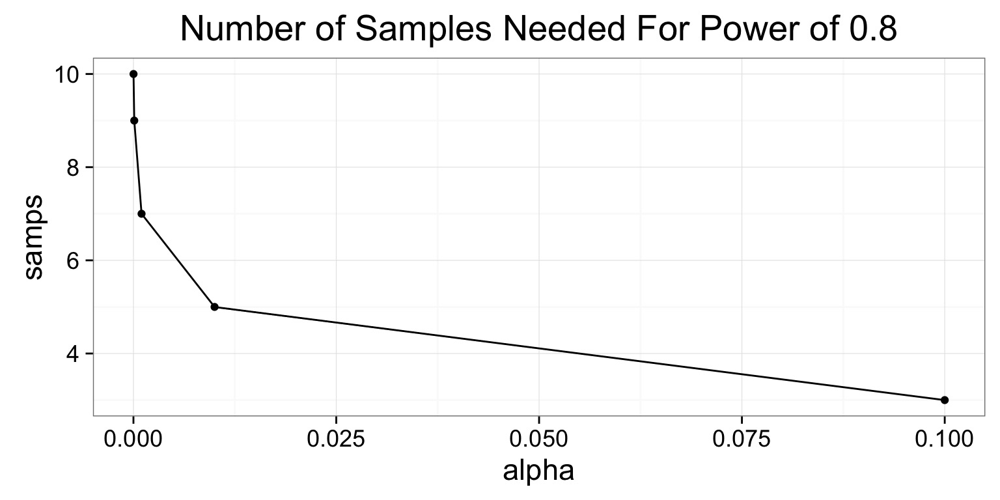